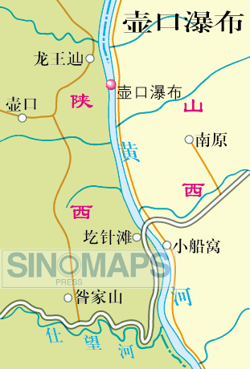
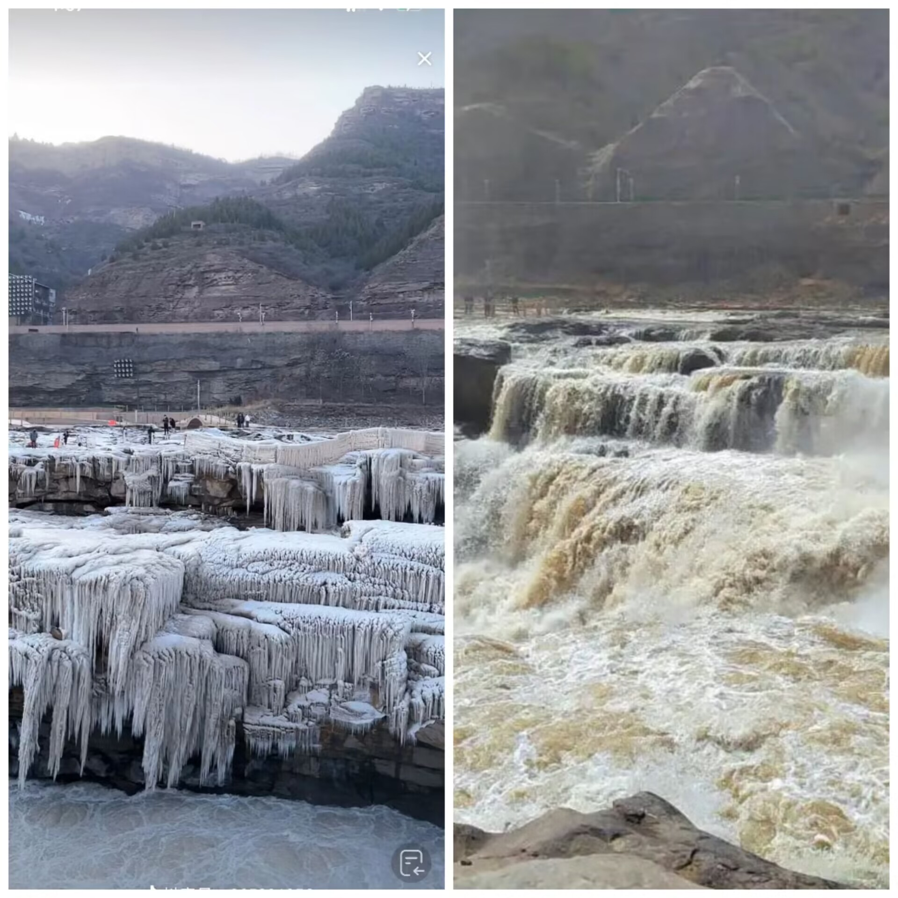

地理位置
壶口瀑布位于秦晋峡谷的南段，南距龙门约65千米，孟门5千米。河西属于陕西省宜川县境，河东与山西省吉县相连，是中国一处大型峡谷瀑布景观。 其具体地理位置为北纬36度8分10秒，东经110度26分40秒，海拔448.1米。以壶口瀑布为中心，北至马粪滩，南至小船窝，西至峡谷地域，东至人祖山，总面积约100平方公里。 东距山西吉县县城45公里，距尧都临汾市169公里；西距陕西宜川县城49公里；距革命圣地延安170公里；北距山西省省会太原387公里；南距陕西省省会西安449公里。
气候条件
壶口瀑布所在地属于暖温带湿和性半湿润、半干旱气候。四季分明，夏季短暂略热，冬季稍长干寒，春秋两季温和多变。
- 严冬：万里黄河顿失滔滔，冰封雪冻，银装素裹。龙槽水位下降加剧了瀑布的落差，瀑布激起的金涛银雾便产生了“水底冒烟”的奇景。
- 农历三月：壶口瀑布进入全年的第一个汛期，俗称“三月桃花汛”。冰河解冻，瀑布在阳光照耀下如七色彩虹，“彩虹通天”又是此时的一大壮景，也是观赏壶口瀑布的黄金时段。
- 盛夏：河水咆哮，如雷贯耳，数公里外便清晰可闻，故称为“谷涧起雷”。
- 金秋时节：河水惊涛拍岸，流水势如龙腾虎跃，又恰如“群龙戏浪”。
